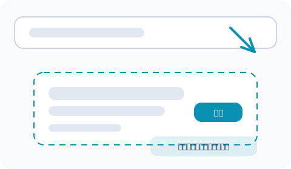
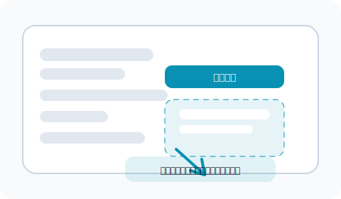
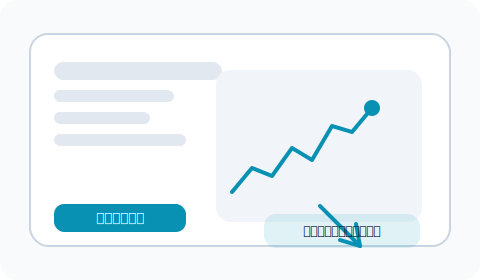
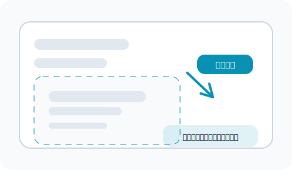

從首頁點選「立即體驗」
打開 LazyBacktest 首頁，點擊右上角的「立即體驗」按鈕，就能進入回測工具。首頁也整理了平台功能與成功案例，可以快速理解回測能解決哪些問題。

小提醒
如果想先了解平台能做什麼，再決定要不要回測，可以先閱讀常見問題整理出的使用情境。
這份使用教學會帶你從首頁進入回測工具、設定策略、觀看圖表，到最後儲存成果。 每個步驟都附上示意圖與小提醒，照著做就能立刻上手。
打開 LazyBacktest 首頁，點擊右上角的「立即體驗」按鈕，就能進入回測工具。首頁也整理了平台功能與成功案例，可以快速理解回測能解決哪些問題。
如果想先了解平台能做什麼，再決定要不要回測，可以先閱讀常見問題整理出的使用情境。
在搜尋列輸入股票名稱或代碼，例如「台積電」或「2330」。系統會自動帶出市場與全名，確認無誤後按下搜尋即可抓取歷史資料。
若找不到代碼，可以到社群討論請教其他使用者，他們常分享不同券商代碼與注意事項。
回測工具會預設多組常用參數，你可以調整停損停利、資金投入比例或策略篩選條件。懶得設定也沒關係，直接使用預設組合就能快速看到結果。
初學者可以先用預設組合跑一次，熟悉流程後再慢慢微調。想確認設定是否合理，可以參考資料使用原則了解系統抓的歷史資料來源。
完成回測後會顯示收益曲線、最大回落、勝率等指標，交易明細也會列在下方。將滑鼠移到圖表節點，就能看到當日的進出場細節。
想把關鍵結果分享給朋友？可以直接複製網址，或到社群討論張貼你的觀察，一起討論策略優化。
覺得這次的組合值得收藏時，請點擊工具上方的「儲存股票紀錄」。未來打開「股票紀錄」頁面，就能比較不同策略的成果並快速再次回測。
